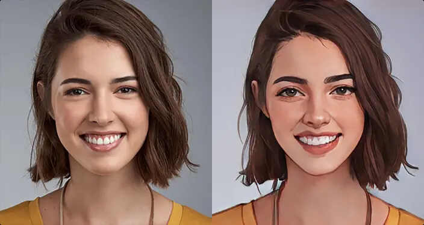
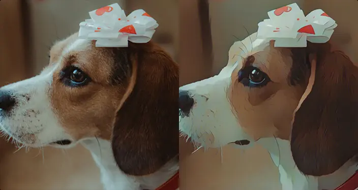

{% include './Header.html' %}
Caricaturer votre Photo
avec UN Clic
Telecharger CartoonImg
Telecharger EdgeImg

Rio Cartoonizer
Voyez instantanément votre visage
de cartoon en utilisant notre Rio Cartoonizer.
ce cartoonizer adopte AnimeGANv2 pour
caricaturer automatiquement votre photo
de visage.
Au lieu d'utiliser des filtres de cartoons,
un seul clic vous permettra de vous
caricaturer en ligne sans effort pour obtenir
des effets étonnants.

Rio Cartoonizer permet de créer de superbes effets de dessin animé pour paysages, d'animaux domestiques, de nourriture et plus encore. En utilisant des algorithmes avancés, notre cartoonizer d'images peut vous servir comme convertisseur d'une image en dessin animé, même au niveau de l'impression
{% include './Footer.html' %}